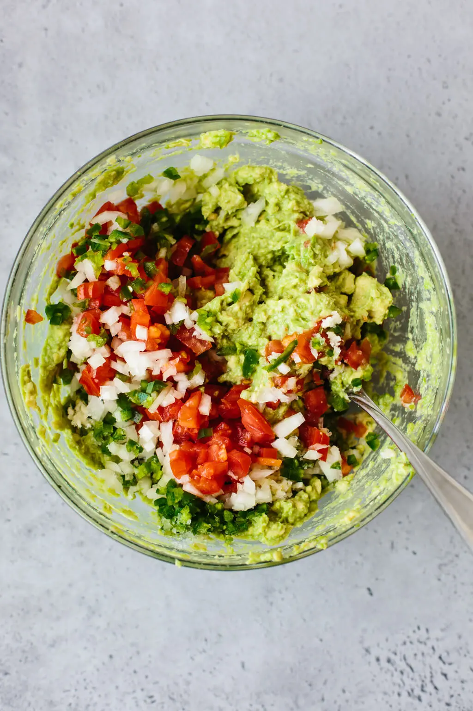

JUMP TO RECIPE
JUMP TO RECIPE
This is the BEST guacamole recipe as it’s simple to make and uses fresh, high quality ingredients. Authentic guacamole doesn’t contain fillers and unnecessary ingredients. All you need is avocados, onion, tomatoes, cilantro, jalapeno pepper, lime juice, garlic and salt. Easy and delicious!
With just 8 simple ingredients you can make one of the all-time-best dip recipes.
- Avocados: Look for avocados that are ripe, but firm. You definitely don’t want soft and mushy avocados.
- Onion: I’m using yellow onion which is most often used in Mexico, but you could use red onion as well.
- Tomatoes: Choose Roma tomatoes which are less juicy. No one wants a watery guac.
- Cilantro: One of my favorite herbs and a staple in Mexican cuisine.
- Jalapeno: You can also use serrano pepper for a little extra heat.
- Garlic: Some people like their guac with garlic, others like it without. I love just a little.
- Lime: Freshly squeezed is a must. Don’t use jarred lime juice!
- Salt: A pinch of salt brings it all together.

- 3 avocados, ripe
- 1/2 small onion, finely diced
- 2 Roma tomatoes, diced
- 3 tablespoons finely chopped fresh cilantro
- 1 jalapeno pepper, seeds removed and finely diced
- 2 garlic cloves, minced
- 1 lime, juiced
- 1/2 teaspoon sea salt
- Slice the avocados in half, remove the pit, and scoop into a mixing bowl.
- Mash the avocado with a fork and make it as chunky or smooth as you'd like.
- Add the remaining ingredients and stir together. Give it a taste test and add a pinch more salt or lime juice if needed.
- Serve the guacamole with tortilla chips.
BACK TO THE TOP